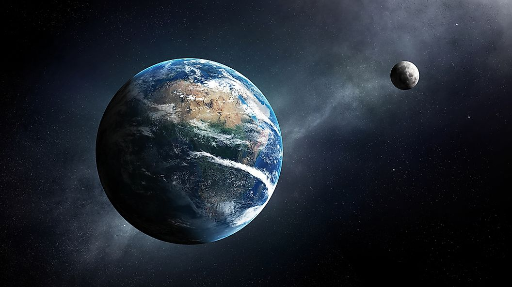

Moon rotation around Earth
The Moon orbits Earth in the prograde direction and completes one revolution relative to the Vernal Equinox and the stars in about 27.32 days
(a tropical month and sidereal month) and one revolution relative to the Sun in about 29.53 days (a synodic month).
Earth and the Moon orbit about their barycentre (common center of mass), which lies about 4,600 km (2,900 mi) from Earth's center (about 72% of its radius).
On average, the distance to the Moon is about 385,000 km (239,000 mi) from Earth's center, which corresponds to about 60 Earth radii or 1.282 light-seconds.

The Moon's elongation is its angular distance east of the Sun at any time. At new moon, it is zero and the Moon is said to be in conjunction.
At full moon, the elongation is 180° and it is said to be in opposition. In both cases, the Moon is in syzygy, that is, the Sun, Moon and Earth are nearly aligned.
When elongation is either 90° or 270°, the Moon is said to be in quadrature.